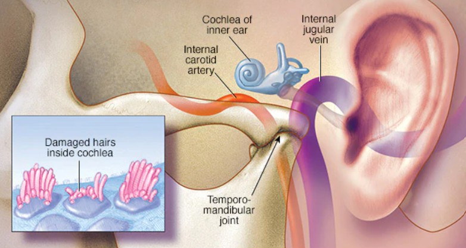

El tinnitus es un zumbido o ruido que una persona escucha en los oídos, pero que no viene del exterior. Puede presentarse de forma leve o intensa y afectar la concentración, el descanso y la calidad de vida de quienes lo padecen, especialmente cuando se mantiene por largos periodos de tiempo.
En Chile, entre el 1% y el 2% de las personas enfrentan este problema de forma persistente, lo que genera dificultades en la vida diaria. Muchas personas experimentan estrés, ansiedad o problemas para dormir debido a la presencia constante de estos sonidos.
El tinnitus puede aparecer por diversas razones, como daño en el oído interno, problemas mandibulares, exposición prolongada a ruidos fuertes o incluso por la forma en que el cerebro interpreta los sonidos. Cada caso puede ser diferente dependiendo de la persona.
Aunque no siempre tiene cura, existen tratamientos que ayudan a disminuir sus efectos, como terapias de sonido, uso de dispositivos especiales o apoyo psicológico. Estas alternativas buscan mejorar la calidad de vida del paciente.
Más allá del cerumen:
El tinnitus puede tener múltiples causas como daño celular, problemas vasculares o tensión mandibular. Por esta razón, es importante realizar una evaluación médica adecuada para identificar el origen del problema y determinar el tratamiento más apropiado en cada caso.

Imagen referencial del oído y causas del tinnitus.
Ajustada a 400x300 px con object-fit.